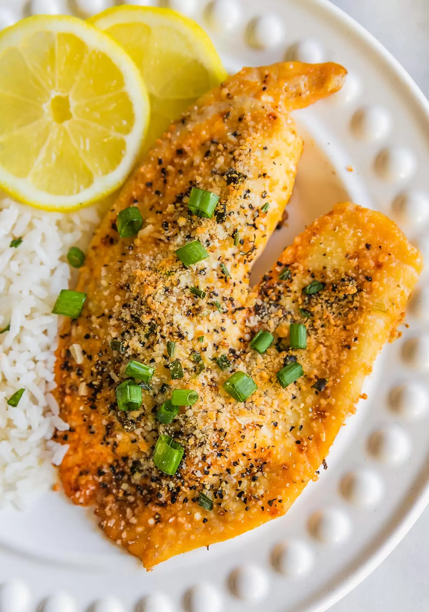

How to Cook: Pan fried Lemon Tilapia
First Step: Wash Hands for at least 20 secs.
Tools: You will need 3 bowls
Step 1: Fill the first bowl with flour
Step 2: Fill in the second bowl with lemon flavored bread crumbs
p> Step 3: Fill the third bowl with 3-4 eggs ( depending on how many are being served), 1/2 cup tobasco sauce, 1 tsp black pepper,1 cup of milk. Mix all ingredient together in the third bowl. 